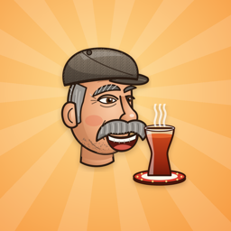
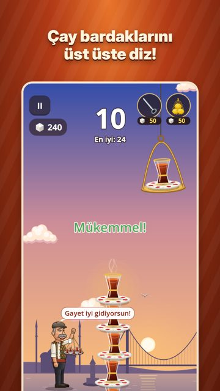
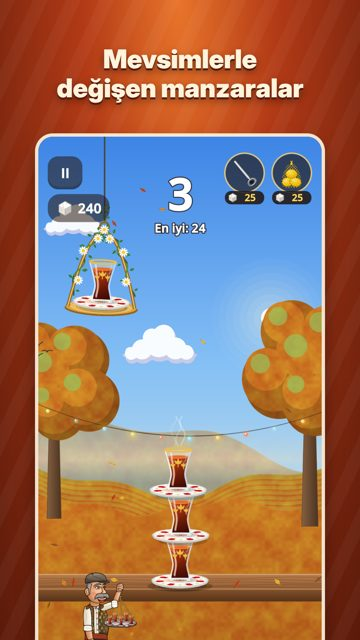
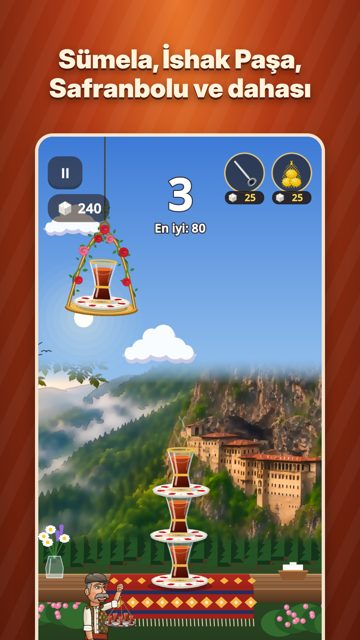

Çay Tower
Türk çay bardaklarını üst üste diz, kuleni gökyüzüne yükselt! Tek dokunuşla oynanan, ücretsiz ve rahatlatıcı bir oyun.
Google Play'den indir



Oyunda neler var?
- Boğaz, Kız Kulesi, Kapadokya, Sümela, İshak Paşa Sarayı, Safranbolu ve daha fazla manzara
- Mevsimlerle değişen görünüm: sonbahar, kış, bahar ve yaz
- Bulutların üstünden uzaya kadar yükselen gökyüzü
- Bardak, tabak, manzara ve tepsi süsleri; günlük ve haftalık görevler
- Arkadaşlarına kodla meydan oku ya da aynı Wi-Fi'da canlı yarış
Stack Turkish tea glasses sky-high!
Çay Tower is a free, cozy one-tap tower game inspired by Turkish tea culture, with seasonal scenes, daily missions and friendly races.